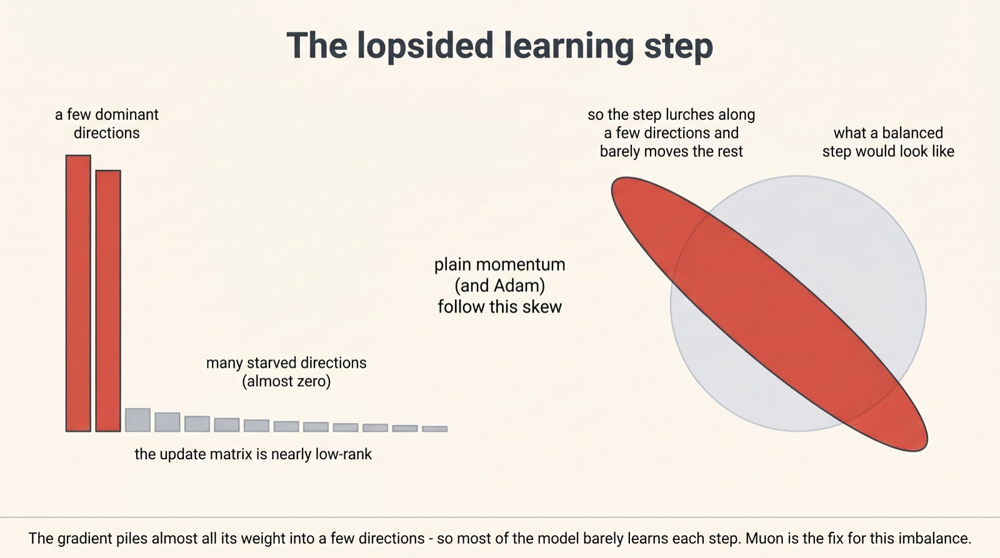
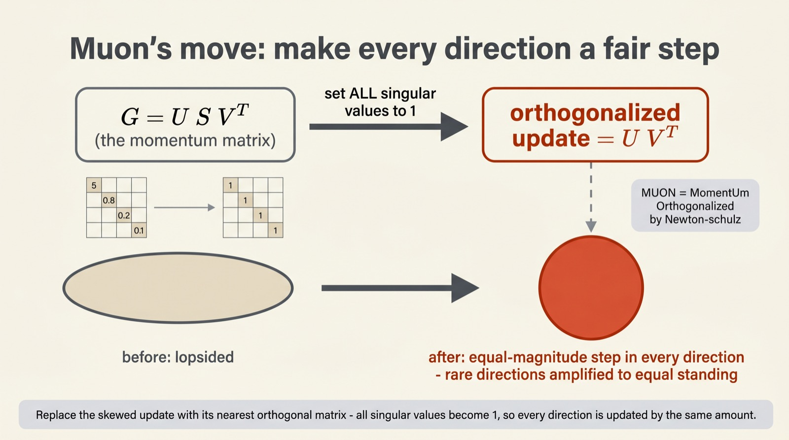
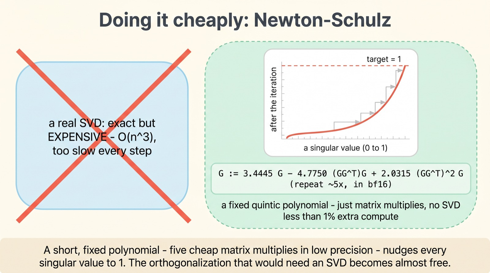
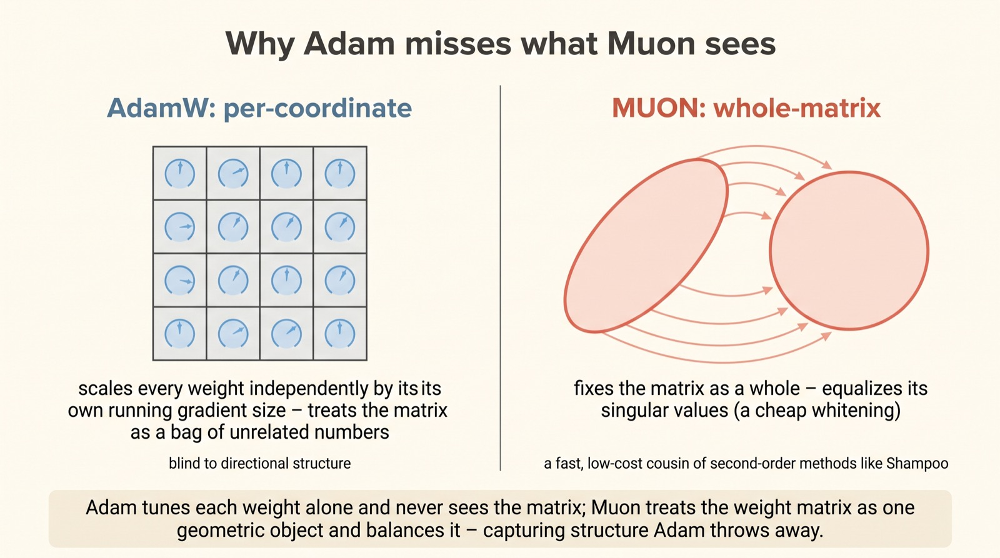
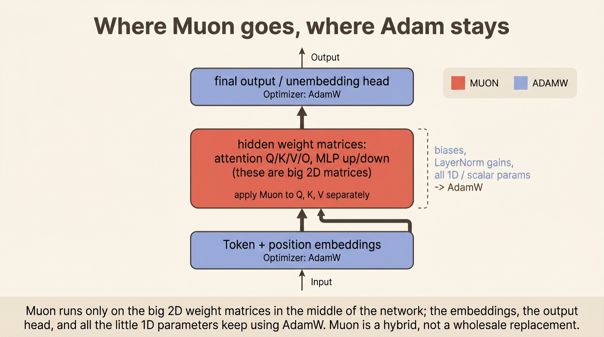
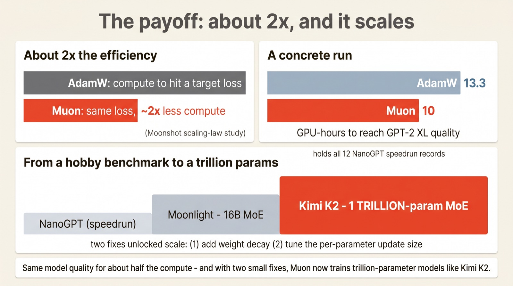

Muon: the optimizer reshaping how big models train
A fairer
gradient step
For a decade, almost every large model has been trained by the same optimizer: AdamW. Muon is the first serious challenger to stick — and its idea is geometric, not statistical. It looks at the shape of each update and notices it's lopsided, then straightens it out. The result: roughly the same model for half the compute.
Created by Keller Jordan in late 2024, Muon orthogonalizes the gradient — flattening its singular values so every direction gets a fair step — using a cheap Newton–Schulz iteration. Moonshot AI then showed it scales: their "Muon is Scalable" study reported ~2× the compute efficiency of AdamW, and the recipe now trains trillion-parameter models like Kimi K2.
Scroll to begin.
↓
The shape of a learning step
Training a neural network is, at heart, a long sequence of small steps. At each one, the model computes a gradient — a direction to nudge its weights — and an optimizer decides exactly how to take that step. It's the least glamorous part of deep learning and one of the most consequential: a better optimizer means the same model for less money, or a better model for the same.
Here's the problem Muon noticed. For a weight matrix, the update isn't a single arrow — it's a whole matrix of numbers, and that matrix is badly lopsided. If you decompose it into its fundamental directions, a handful of them carry almost all the magnitude, while the rest are nearly zero. The update is "almost low-rank," in the authors' words: it lurches hard along a few directions and barely moves the model along all the others.

This is wasteful. The model has thousands of directions it could be learning in, and most of them are getting starved every single step. AdamW, the reigning optimizer, doesn't fix this — it rescales each weight on its own, but it never looks at the matrix as a whole, so the directional imbalance survives. Muon's whole contribution is to straighten that step out.
Muon's move: make the step fair
Muon's fix is a single, clean operation with a slightly intimidating name: it orthogonalizes the update. Strip away the jargon and it means something simple — make every direction count equally.
Every matrix can be broken into three pieces by the singular value decomposition: G = U S VT. Here U and V hold the directions, and S is a list of how strongly each direction fires — those lopsided magnitudes from the last section. Muon does the boldest possible thing to S: it sets every value in it to 1. The dominant directions are reined back in; the starved ones are amplified to equal standing. What's left, U VT, is the orthogonalized update — a step of equal magnitude in every direction at once.

Geometrically, it turns a step shaped like a thin, stretched ellipse into a clean circle — the same push in all directions. Conceptually, it forces the model to learn in every direction the data offers, not just the loudest few. The only catch is that an SVD is far too slow to run on every weight matrix, every step. So Muon never actually computes one.
Doing it cheaply: Newton–Schulz
A true SVD costs roughly the cube of the matrix size — fine once, ruinous when you do it for every layer on every one of a million training steps. Muon's practical trick, and the reason it's usable at all, is to approximate the orthogonalization with something cheap.
That something is the Newton–Schulz iteration: a short, fixed polynomial you apply to the matrix a handful of times. Each pass nudges the singular values toward 1 without ever naming them — it's just a few matrix multiplications. After about five iterations they're close enough, and crucially the whole thing runs in low-precision bf16, the format GPUs are fastest at.

The cost of all this? In a typical language-model run, under one percent of total compute. For one famous setup the overhead worked out to 0.7%. You get the geometric benefit of a heavyweight second-order method for almost nothing — which is exactly why Muon is more than a curiosity.
Why Adam misses it
To see what's genuinely new here, it helps to contrast Muon with the optimizer it's challenging. AdamW's strategy is per-coordinate: it keeps a running estimate of how big each individual weight's gradients have been, and scales each one independently. Every number in the matrix is tuned on its own, in isolation.
That's powerful, but it's blind to structure. Adam treats a weight matrix as a flat bag of unrelated numbers; it has no notion that those numbers form directions, or that a few of those directions are hogging the update. Muon takes the opposite view: it treats the weight matrix as a single geometric object and fixes the relationship between its directions — equalizing the singular values that Adam never even looks at.

In fact, Muon turns out to be a fast, stripped-down relative of a classical heavyweight optimizer called Shampoo, which "whitens" gradients with expensive matrix roots. Muon gets most of the same effect — balancing the matrix's geometry — by applying momentum first and then the cheap Newton–Schulz pass. It's the rare case of a second-order idea made cheap enough to actually use.
Where Muon goes, where Adam stays
One practical surprise: Muon is not a wholesale replacement. It only makes sense for the parts of the network that are 2D weight matrices — and a transformer has plenty that aren't.
So real training runs are hybrids. Muon takes the big matrices in the middle of the network — the attention projections and the feed-forward layers, where the bulk of the parameters live. But the embedding layer at the input, the output head at the top, and all the little one-dimensional parameters — biases, normalization gains — keep using AdamW, because orthogonalization simply doesn't apply to them. The authors found this split matters for getting the best results.

It's a small detail with a useful lesson: Muon isn't trying to win an argument with Adam so much as do the one job Adam does poorly. Each handles the part of the network it's suited for. With that division settled, the only question left is whether it actually pays off — and here the evidence is unusually strong.
The payoff: about 2×, and it scales
Optimizers are littered with ideas that look good on a small benchmark and evaporate at scale. What makes Muon notable is that it has cleared both bars.
At small scale, the evidence is almost comically direct. Muon holds all twelve of the NanoGPT speed records, set by seven different researchers — and the kicker is that anyone could take the record back simply by showing AdamW is faster. Nobody has. On a 1.5B model, Muon reached GPT-2 XL quality in 10 GPU-hours versus AdamW's 13.3.
The scale question was settled by Moonshot AI. Their "Muon is Scalable" study found that with just two adjustments — adding weight decay and carefully tuning the per-parameter update size — Muon delivered roughly 2× the compute efficiency of AdamW on compute-optimal training, and trained their Moonlight mixture-of-experts model out of the box. That same stack now trains Kimi K2, a trillion-parameter model. An idea from a hobbyist speedrunning benchmark is now training some of the largest open models in the world.

Why this matters
It's easy to underrate optimizer research — it sounds like plumbing. But the optimizer is a multiplier on everything: every dollar of compute, every training run, every model a lab can afford to attempt. A genuine 2× there is not a tweak; it's the difference between training one frontier model and two.
Muon's deeper lesson is about where the gains were hiding. For ten years the field treated AdamW as settled and looked for progress in architectures and data. Muon found a large, free improvement by asking a question nobody was asking — not "how big should each step be?" but "what shape should the step be?" The answer, it turns out, is: fair in every direction.
And there's something fitting in its origin. Muon wasn't born in a big lab's research program — it came out of NanoGPT speedrunning, a friendly competition to train a small model as fast as possible. That a hobbyist sport produced the optimizer now training trillion-parameter models is a reminder that in this field, the next big idea can still come from anywhere — and that the boring-sounding parts are often where it's been waiting all along.